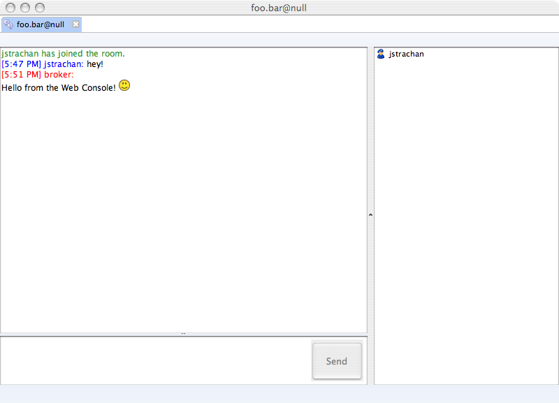

XMPP
Connectivity > Protocols > XMPP
XMPP Protocol Support (Jabber!)
Deprecated
This transport was deprecated in 5.8.0 and has been removed in a 5.9.0!
We have support for XMPP (Jabber) as a transport in ActiveMQ.
To use just add a connector as follows
<broker xmlns="http://activemq.org/config/1.0">
<transportConnectors>
<transportConnector name="openwire" uri="tcp://localhost:61616" discoveryUri="multicast://default"/>
<transportConnector name="stomp" uri="stomp://localhost:61613"/>
<transportConnector name="xmpp" uri="xmpp://localhost:61222"/>
</transportConnectors>
</broker>
And you can now use XMPP to connect to the broker & send and receive messages.
Some versions of the broker (5.0-5.2) does not include WoodStox library by default, which could impact ActiveMQ XMPP funcionality. You should have a library named like
wstx-asl-x.x.x.jarin thelib/optionaldirectory of your broker. If that’s not the case, download it from here and put it in the classpath
XMPP Support in Apache ActiveMQ
ActiveMQ provides a bidirectional bridge between ActiveMQ messages and XMPP.
- if a client joins a chatroom / conference room, the name of the conference room is mapped to a JMS topic of the same name
- typing into a chatroom sends a message to the topic
- presence in a chatroom maintains a subscription on the JMS topic (using noLocal to avoid getting copies of things you say) so that messages sent by other clients (via XMPP, the Web Console, the Examples or any other Cross Language Clients) are then sent to the chatroom.
Using a Jabber Client
Basically, you should be able to connect from any Jabber-compatible client to the broker. The below example is using Spark 2.0.0 version. For more details on connecting with different clients take a look at #Jabber clients compatibility.
To connect to Apache ActiveMQ try the following…
- Run the Web Console
- Start Spark or whatever Jabber Client you wish
-
Login to localhost:61222
Some Jabber clients (like iChat) insist on usernames in forms of username@host, so in that case just append @localhost to your username

Some Jabber clients like to auto-discover the host and port. You need to explicitly disable this feature so you can explicitly configure localhost as the host and 61222 as the port.
e.g. on Spark go to the Advanced tab and disable the Automatically discover host and port
-
You should now see the following screen…

-
Now click on the Join Conference Room button (next to the Add Contact button) and the following dialog should appear

-
Now press the Create or Join Room button to get the following dialog. Enter a JMS topic name, in this case foo.bar and you’re good to go…

-
Now your chat window should appear for talking and listening to the topic foo.bar. So start typing to test things out.

-
Now if you go to the Topic Console in the Web Console you should see the topic has been created

-
If you now click on the Send To link next to the foo.bar topic you can send a message to the topic from the web console.

-
Press send and you should see the chat appear on the chat window

Jabber clients compatibility
Here you can find specfic issues and workarounds for various Jabber clients. If you have some of your own, please post them here.
Spark
Url: http://www.igniterealtime.org/projects/spark/index.jsp
Spark 2.0.0 works fine with ActiveMQ; Click here to download: Spark 2.0.0 for Windows.
Spark 2.5.x connects fine, but it won’t open the Join Conference Room dialog.
iChat
Url: http://www.apple.com/macosx/features/ichat.md
Tested version 4.0.7 works fine, but it insists you use username@host format for usernames
Adium
Url: http://www.adiumx.com/
Tested version 1.3.3 works fine. The only spotted issue is reconnecting to Command Agent topic. We recommend that you restart the Adium if you need to do this